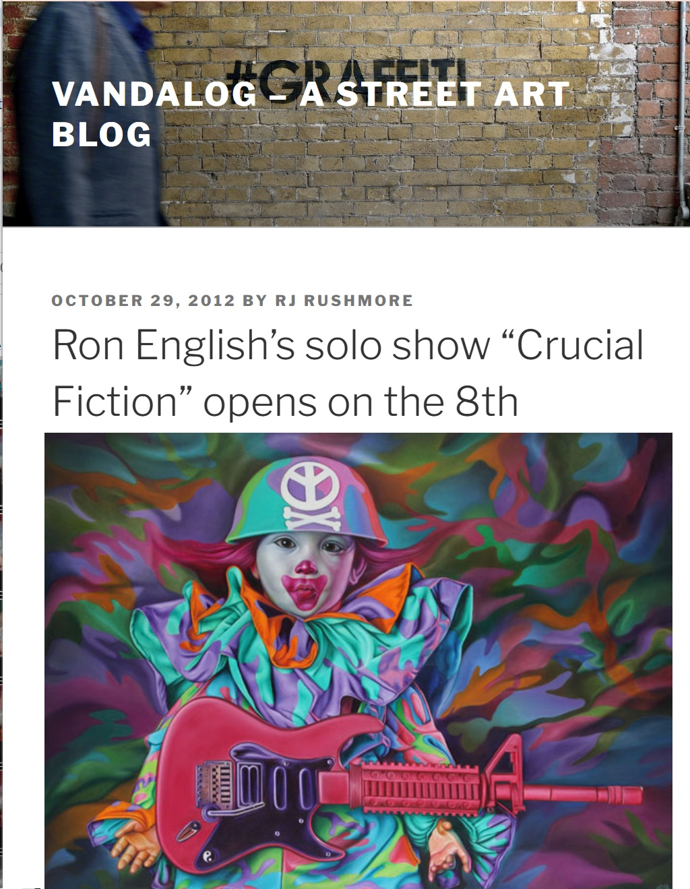
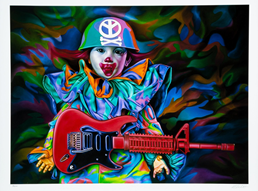

Exhibitions
Crucial Fiction, Opera Gallery, New York, New York, US, November 1–29, 2012.
Turn the Page: The First Ten Years of Hi-Fructose, Virginia Museum of Contemporary Art, Virginia Beach, Virginia, US, May 22–December 31, 2016.
Turn the Page: The First Ten Years of Hi-Fructose, Crocker Art Museum, Sacramento, California, US, June 11–September 17, 2017.
Literature
Ron English, Death and the Eternal Forever (Korero Press, 2014), p. 96. ISBN 978-0957664920.
Ron English, Status Factory: The Art of Ron English (San Francisco: Last Gasp, 2014), p. 41. ISBN 978-0867197891.
Ron English, Original Grin: The Art of Ron English (Paris: Cernunnos, 2019), p. 104. ISBN 978-2374950938.
Notes
The composition was later reproduced as a related archival pigment print.
Ancillary Documentation


Selected Online Circulation
Selected examples of the work’s online circulation, reproduction, or discussion. This list is not exhaustive; it is intended to document representative appearances of the image beyond formal exhibition and publication records.